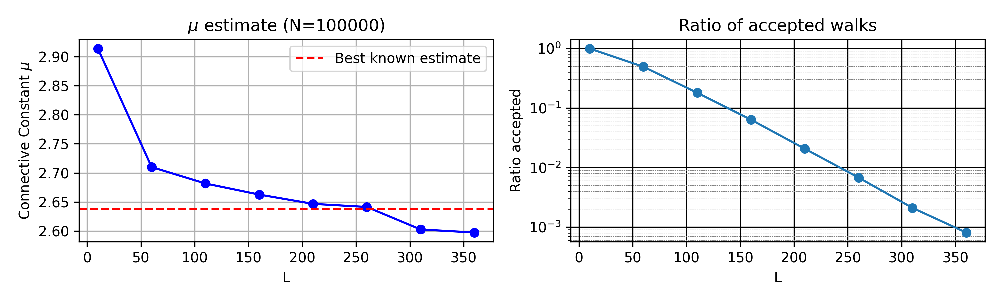
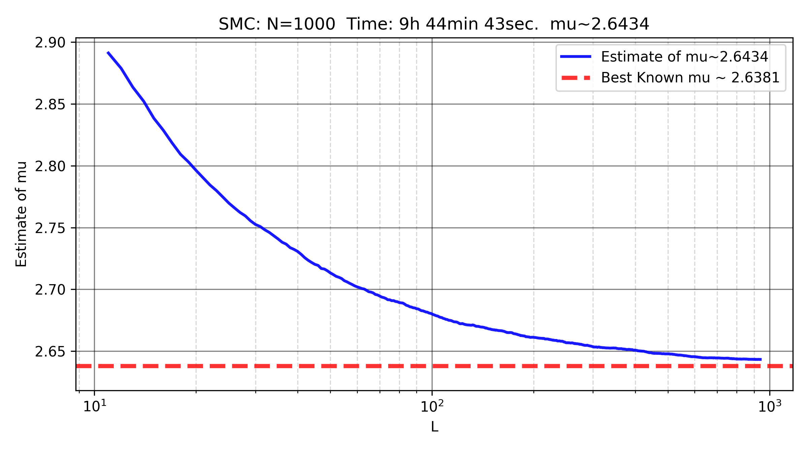

These notes present comments on the “Self-avoiding walks” assignment given to the “ST3247: Simulations” class. Most of the drafts that have been submitted so far describe variations of importance sampling. The purpose of these notes is to suggest directions for slightly more advanced Monte Carlo methods that can be used to estimate the connective constant \(\mu\) of self-avoiding walks. These are only pointers and suggestions.
The problems and notations
Recall that we are trying to estimate the connective constant \(\mu\) of self-avoiding walks (SAW) in the 2D lattice \(\mathbb{Z}^2\). If \(c_L\) denotes the number of SAWs of length \(L\), we have the following asymptotic behavior:
\[ c_L \; \sim \; A \, \mu^L \, L^{\gamma} \]
for some unknown constants \(A\), \(\mu\), and \(\gamma\). The main objective of the assignment is to estimate \(\mu\), which can also be expressed as the limit of \(c_L^{1/L}\) as \(L \to \infty\). As of today, the best known estimate is \(\mu \approx 2.638158533032790(3)\), which required several tens of thousand hours of CPU time to compute. To estimate \(\mu\), one must approximate the number of SAWs of length \(L\) starting at the origin for large values of \(L\) if one hopes to get a good estimate.
Consider a sequence \(z_{0:L} = (z_0, z_1, \dots, z_L)\) of \(L+1\) distinct vertices in \(\mathbb{Z}^2\) with \(z_0 = (0,0)\) and \(\|z_{k+1} - z_k\|=1\) for all \(0 \leq k \leq L-1\), i.e., a walk of length \(L\). For notational convenience, let us introduce the function \(\varphi^{\textrm{walk}}(z_{:L})\) that returns one if \(z_{0:L}\) is a correct walk of length \(L\), and zero otherwise. In particular, this function returns zero if two consecutive vertices are the same, or if the walk does not start at zero. Similarly, introduce the function \(\varphi^{\textrm{SAW}}(z_{:L})\) that returns one if \(z_{0:L}\) is a SAW of length \(L\). One can define two important probability mass functions:
\[ p^{\textrm{walk}}_{L}(z_{0:L}) = \frac{\varphi_L^{\textrm{walk}}(z_{0:L})}{4^L} \qquad \textrm{and} \qquad p^{\textrm{SAW}}_{L}(z_{0:L}) = \frac{\varphi_L^{\textrm{SAW}}(z_{0:L})}{c_L}. \]
They describe the uniform distributions on all the walks of length \(L\) and all the SAWs of length \(L\), respectively.
Importance sampling
One can approximate \(c_L\) with naive Monte Carlo by estimating the proportion \(p_L\) of walks that are SAWs,
\[ p_L = \mathbb{E}_{p^{\textrm{walk}}_{L}} \left[ \varphi_L^{\textrm{SAW}}(z_{0:L}) \right] = \frac{1}{4^L} \sum_{z_{0:L}} \varphi_L^{\textrm{SAW}}(z_{0:L}). \]
This is an absolute disaster since the proportion of SAWs among all walks is extremely small. One can do significantly better using importance sampling. For this, consider a proposal distribution that starts at the origin and continues by choosing uniformly among the four neighbors of the last vertex that have not been visited yet. If there are no unvisited neighbors, the walk continues by standing still until length \(L\) is reached: the resulting path is not even a valid walk, so \(p^{\textrm{walk}}_{L}(z_{0:L}) = 0\) as well as \(p^{\textrm{SAW}}_{L}(z_{0:L}) = 0\). The probability mass function of the proposal distribution is easy to compute, so estimating \(p_L\) with importance sampling is straightforward. This is usually called the Rosenbluth method (Rosenbluth and Rosenbluth 1955). [Note to students: make it much clearer in your report that the Rosenbluth method is just importance sampling. Do note that even the “rejected” walks have to be taken into account!]

As one can see, the quality quickly deteriorates as \(L\) increases. This is because the number of accepted walks is very small, and, among them, the importance weights are highly unequal.
[Note to students: you should explain this much more clearly, and possibly explore this more quantitatively. The reason it is failing is not only that the number of accepted walks is small]
Recursive formulation
We have just seen that importance sampling will not be able to estimate \(c_L\) for large values of \(L\). This makes accurate estimates of \(\mu\) difficult to obtain this way.
To make progress, one can exploit the recursive structure of the problem. Let us define the concatenation of two walks. Given a first walk \(z^{(A)}_{0:L_A}\) and a second walk \(z^{(B)}_{0:L_B}\), one can define a new walk of length \(L_A + L_B\) by starting at the origin, following the \(L_A\) increments of the first walk, then the \(L_B\) increments of the second. The concatenation of two SAWs is not always a SAW. However, it is not hard to prove the following. Define \(B(L_A, L_B) \in (0,1)\) as the probability that, when sampling SAWs \(z^{(A)}_{0:L_A}\) and \(z^{(B)}_{0:L_B}\) independently and uniformly at random, their concatenation is still a SAW. Then:
\[ B(L_A, L_B) \; = \; \frac{c_{L_A + L_B}}{c_{L_A} \, c_{L_B}}. \]
[Note to students: it is OK for you to use this fact. It’s even better if you can prove it, but not absolutely necessary.]
Assuming one can generate SAWs of length \(L\) uniformly at random ( a problem that will be discussed later), we can estimate \(\mu\) in several ways:
For small values of \(L_1\), the number of SAWs \(c_{L_1}\) is known exactly (e.g., \(c_1 = 4\), \(c_{10} = 44100\)). Suppose one can generate SAWs of length \(L_2 \gg 1\). One can then estimate \(B(L_1, L_2)\) empirically. Since \(c_L \; \sim \; A \, \mu^L \, L^{\gamma}\), it follows that, for \(L_1\) fixed and \(L_2 \to \infty\), \[ \frac{c_{L_1+L_2}}{c_{L_2}} \approx \mu^{L_1}. \] Using the fact that \(B(L_1, L_2) = c_{L_1+L_2} / (c_{L_2} c_{L_1})\), one can then estimate \(\mu\) from the estimate of \(B(L_1, L_2)\).
Alternatively, one can estimate \(c_L\) for large \(L\) recursively. For example, starting from \(c_{10} = 44100\), estimate \(B(10,10)\) to compute \(c_{20}\), then use \(B(20,20)\) to compute \(c_{40}\), and so on. Using this method and about \(5\) hours of CPU time (see below for details) with \(10,000\) SAWs of lengths \(10, 20, \dots, 2560\), I obtained \(\mu \approx 2.643\).
Generating SAWs
The previous discussion shows that, once we know how to generate uniform SAWs, we can estimate \(\mu\) relatively easily. One of the most common methods is the pivot algorithm: see here for a nice visualization. The principle is simple: given a SAW, randomly select a pivot site and apply a symmetry operation (like rotation or reflection) to one part of the walk. If the resulting walk remains self-avoiding, accept it; otherwise, reject it. Repeating this process generates diverse, approximately uniform SAWs.
[Note to students: explain this much more clearly if you decide to use it]
In short, the pivot algorithm updates a SAW by applying a symmetry operation to a subpath. Given a SAW \(z_{0:L}\), one can obtain another SAW by applying to it the pivot algorithm a (large) number of times. To obtain a nearly independent SAW of length \(L\) starting from \(z_{0:L}\), one typically need to apply about \(L\) pivot steps. While it can be slow for large \(L\), it is far more efficient than naive importance sampling.
[Note to students: efficiently implementing the pivot algorithm is non-trivial, but LLM assistants can help a lot, and are actually quite useful for code optimization]
Sequential Monte Carlo
To estimate \(c_L\) for large \(L\), one can use Sequential Monte Carlo (SMC). The idea is to grow a population of \(N\) SAWs in parallel and estimate \(c_L\) by recursively estimating the ratios \(c_{L+1}/c_L\). Suppose you have \(N\) SAWs of length \(L\). Try to extend each SAW by choosing a neighbor of the last vertex that has not been visited yet. This is a form of importance sampling, giving \(N\) new walks of length \(L+1\) with associated weights (some of them being non-valid walks!). Then, resample \(N\) times from this weighted set to get \(N\) new SAWs of length \(L+1\) (with possible duplicates). Apply the pivot algorithm to eliminate these duplicates and generate more diverse SAWs.
[Note to students: if you decide to use SMC, explain it much more clearly. It’s not entirely straightforward to understand or implement, but it is one of the most powerful and versatile Monte Carlo methods to this day. A good investment of your time if you decide to understand SMC]

Improving the estimation of \(\mu\)
Suppose you have estimates of \((\log c_L)/L\) for various \(L\). Since
\[ \frac{\log c_L}{L} \approx \log A \cdot \frac{1}{L} + \log \mu + \gamma \cdot \frac{\log L}{L}, \]
you can fit a linear regression to estimate \(\log A\), \(\log \mu\), and \(\gamma\). I tried this approach using a naive and non-optimized SMC implementation with \(N=1000\) and \(L=1000\), running for 10 hours on a free (and bad) online CPU, and obtained \(\mu \approx 2.6366\).
[Note to students: can you do much better?]
Running long simulations
The best known estimate of \(\mu\) required several tens of thousands of CPU hours. While writing these notes, I was able to run simulations easily and for free using deepNote: it was my first time using it, and it was very user friendly. This allowed me to run simulations for 8 hours on a (free but slow) CPU without issue. Launch simulations in the evening and let them run overnight. [Note to students: for the more motivated ones, you can try writing GPU-friendly code to run simulations, possibly on Google Colab]